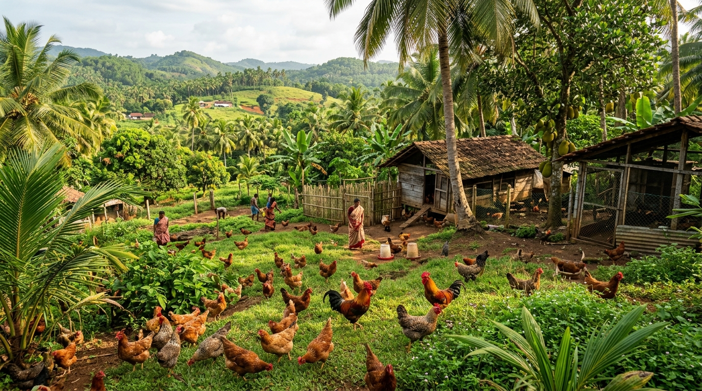

Experience the pure, natural difference of farm-fresh poultry. Our country chickens, Kadaknath, ducks, and quails roam freely on lush green Kerala pastures, foraging on herbs, seeds, and sunshine with zero synthetic hormones or prophylactic drugs.
Naturally foraging on green grass & herbs
Collected fresh at sunrise, peak nutrition
Raised with traditional immunity herbs
Dressed fresh to order with cold chain
Select from our pasture-raised country eggs, Kadaknath, tender country chicken, and duck. Hand-gathered and hygienically dressed fresh for home delivery.
Why conscious families across Kerala choose Earthroot pasture-raised poultry over commercial mass-factory produce.
| Quality Attribute | Earthroot Free-Range | Commercial Factory / Broiler |
|---|---|---|
| Living Environment | Open green pasture, sunlight, dust-bathing, free roaming | Confined in overcrowded dark sheds with restricted movement |
| Feed & Nutrition | Natural grains, flaxseeds, moringa, turmeric, wild greens & insects | Commercial mash with synthetic growth boosters and fillers |
| Antibiotics & Hormones | 0% Antibiotics — Relying on natural immunity herbs | Routine prophylactic antibiotics & chemical growth stimulants |
| Growth Period | Natural slow growth (90 – 120+ days for rich, firm meat) | Artificially fast-grown in just 32 – 40 days (watery texture) |
| Egg Yolk Quality | Deep rich amber-orange yolk, high Omega-3 & Vitamin D | Pale yellow yolk with low nutrient density |
| Taste & Aroma | Rich traditional authentic Kerala Naadan flavor & firm bite | Bland, mushy, high water retention |
Nestled in the pristine foothill valleys of Pullurampara, Thiruvambady, our farm operates on an integrated closed-loop permaculture philosophy.
Our free-range birds graze happily among fruit orchards and coconut trees, naturally aerating the soil. In return, organic spent mushroom substrate from our gourmet mushroom chambers is composted with poultry bedding to create living, microbial-rich organic soil.
Hydrated with untainted Western Ghats natural mountain brook water.
Daily turmeric, garlic water, and neem leaves keeping birds naturally robust.
Preserving heritage Naadan Kozhi, pure Kadaknath, and Kuttanad ducks.
Freshly dressed to order with zero chemical bleaching or brine injections.

A transparent look into how we gather and prepare our pure eggs and meat daily.
Birds roam freely each morning under natural daylight, foraging on greens, mineral-rich soil, and wild insects.
Supplemented with cracked corn, flaxseeds, moringa leaves, and natural probiotics with zero synthetic antibiotics.
Eggs are hand-collected fresh at 6:00 AM, candled for perfection, and carefully nested into breathable pulp cartons.
Meat is hygienically dressed only upon your order, temperature-chilled, and dispatched with eco-ice cold packs.
Bring out the mouthwatering natural flavors of farm-fresh poultry with these classic Kerala recipes.
Country chicken pieces slow-roasted in cold-pressed coconut oil with sliced shallots, crispy coconut bits (thenga kothu), crushed black pepper, and curry leaves.
Tender duck meat simmered in roasted coriander, fennel, black pepper, and thick coconut milk. The ultimate accompaniment for hot Appam or Idiyappam!
Nutrient-dense Kadaknath black chicken simmered with crushed ginger, fresh wild turmeric, shallots, and coriander seeds for peak stamina and recovery.
Everything you need to know about our free-range eggs, fresh dressed meat, and cold delivery.
Commercial broilers are raised in cramped cages, given routine antibiotics, and accelerated to slaughter in under 35 days. Earthroot birds roam freely on open green grass, eat natural grains & medicinal herbs, grow at their natural slow pace (90–120 days), and receive zero antibiotics or hormones. This creates firm, deeply flavorful meat and eggs with vibrant, nutrient-dense orange yolks.
We do not store pre-cut frozen meat. Once you place an order, the bird is hygienically dressed to your preferred cutting style (Curry Cut, Biryani Cut, Skinless, or Skin-On with turmeric wash), chilled under air-cooling, and packed in food-grade insulated packs with gel ice for same-day delivery.
Kadaknath is an indigenous heritage Indian breed famous for its natural black pigmentation (melanin). Its meat contains over 25% protein (significantly higher than ordinary chicken), exceptionally low fat (0.73–1.03%), and high iron & amino acid levels, making it a revered medicinal superfood.
Because our unwashed country eggs retain their natural protective bloom cuticle, they stay naturally fresh for up to 14 days at cool room temperature, and 30 to 45 days when stored in your refrigerator crisper.
Yes! We offer convenient weekly and bi-weekly Family Egg Crates delivered automatically to your doorstep, as well as 100-egg wholesale crates for cafes, bakeries, and organic stores across Kerala.
Have special cutting preferences, weekly subscription requests, or wholesale bulk inquiries? Chat directly with our farm team on WhatsApp for prompt assistance.
Chat & Order on WhatsApp (+91 90486 22044)